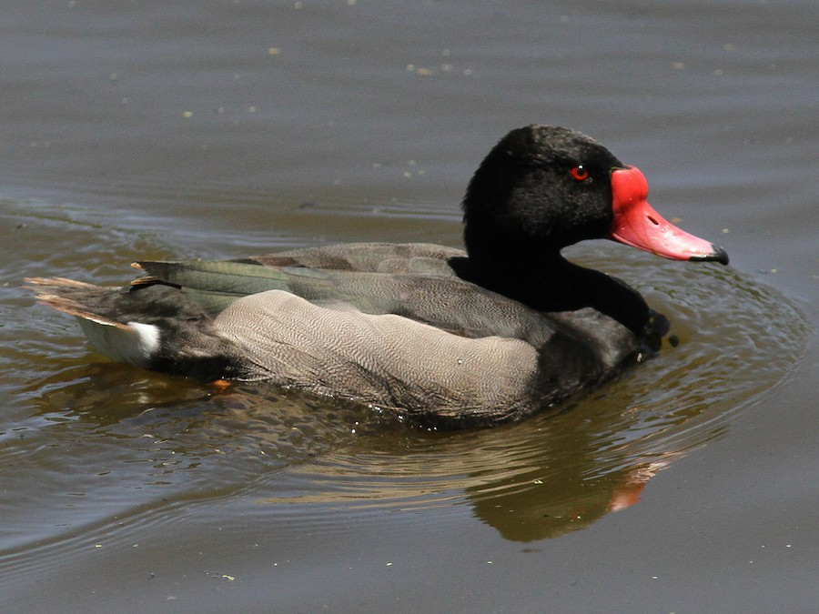
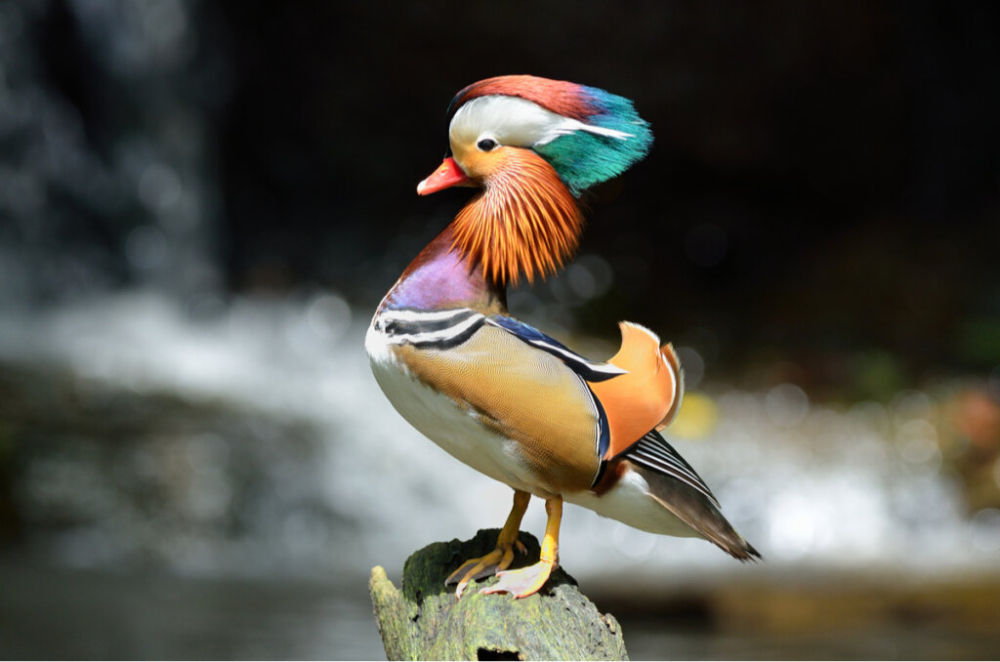

This is Patoxandro. He likes ice skating
This is Patoxandro. He likes ice skating



This is Paticardo. He likes to sing



This is Paticio. He likes to play video games


This is Patorge. He enjoys watching his enemies suffer a cruel, cold, and slow death